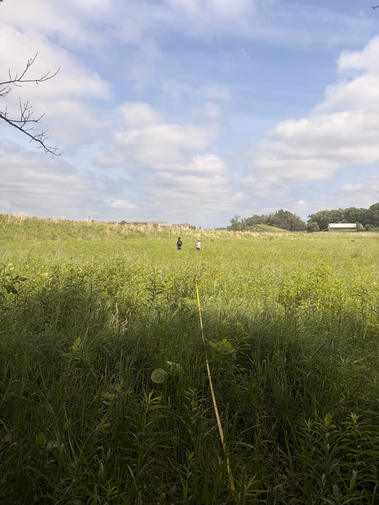

About the Lab
I'm a quantitative ecologist that uses datasets from wild populations to answer applied conservation questions. Through the use and development of statistical models, I connect individual behavior and movement to demography and landscape-scale patterns. My work sits at the intersection of biology and statistics, and I spend as much time coding in R as I do collecting data in the field.
Before teaching at St. Olaf, I recieved my PhD at the University of California, Davis where I studied the elevational movements of song birds in the Great Basin. At St. Olaf, my research focuses on using data collected from emerging technology such as camera traps and autonomous recording units (ARUs) to answer questions about animal abundance and ecology.
Research Areas
Avian Abundance Estimation with ARUs
Can we use data from autonomous recording units (ARUs) to estimate the number of individual birds on the landscape? This work combines research on the physics of sound with ornithology and data science.
Read more →Camera Traps and Wildlife Populations
This resarch examines a variety of field and statistical models and their application in abundance estimation from camera trap data of unmarked animals.
Read more →Elevational Movement of Great Basin Birds
The Great Basin is a large, cold desert in the western United States. My doctoral work examined bird populations in the mountains of the Great Basin and how elevation and climate change impacted their population dynamics.
Read more →Recent Publications
Shifts in elevational distributions of montane birds in an arid ecosystem
Ecography, 2024